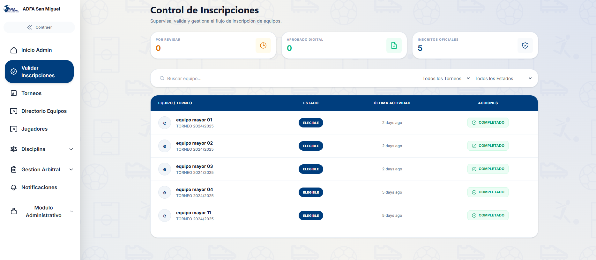
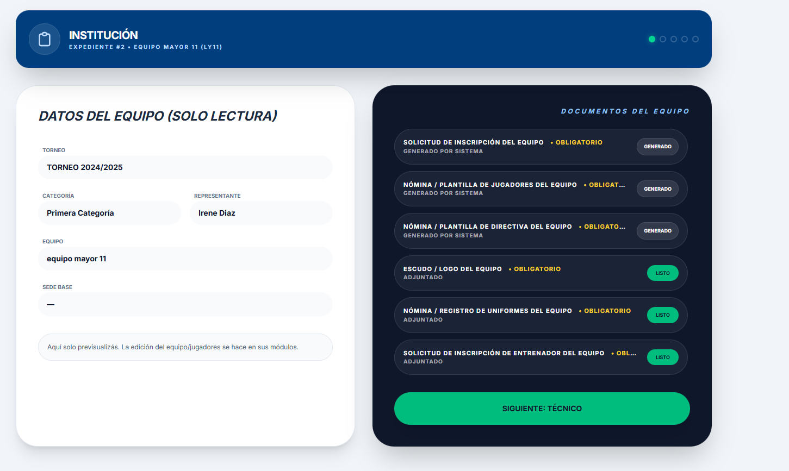
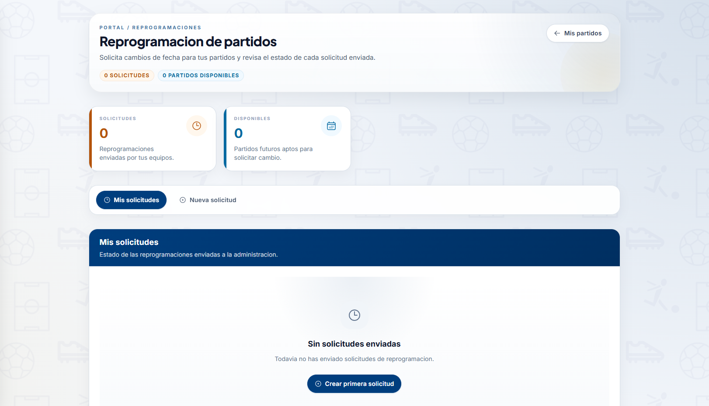
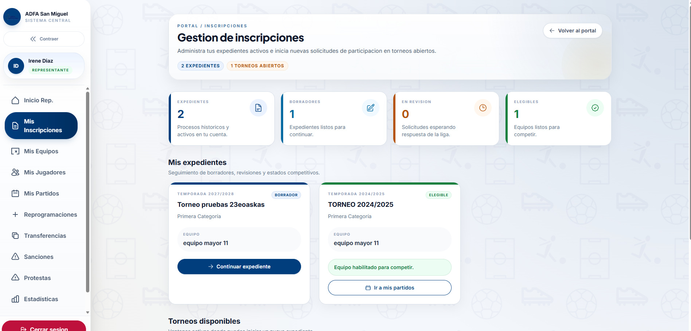
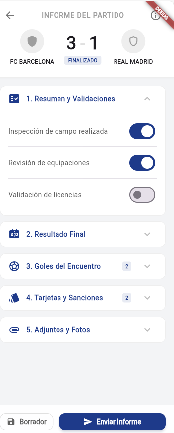
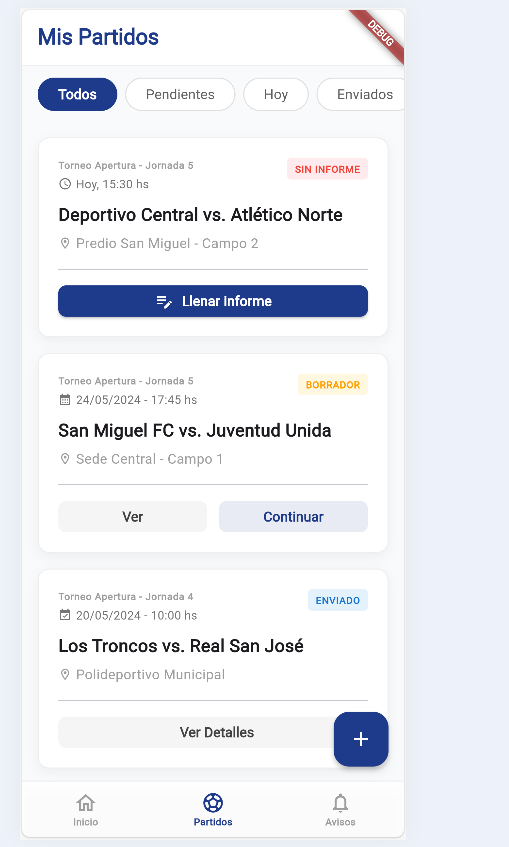
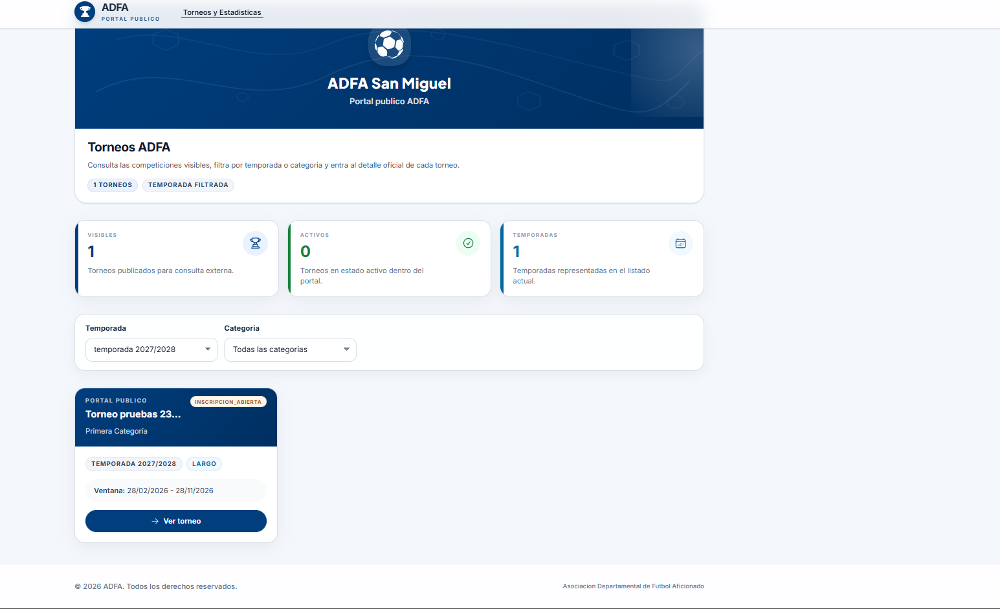

Egresado de Ingeniería en Sistemas Informáticos
Análisis, desarrollo y gestión de la información
Egresado de Ingeniería en Sistemas Informáticos (Universidad de El Salvador, Facultad Multidisciplinaria Oriental), en trámite de Expediente de Graduación. Formación en análisis y diseño de sistemas, bases de datos relacionales y ofimática, actualmente fortaleciendo control de versiones (Git) y programación (Python). Interesado en roles de desarrollo y gestión de información, con atención al detalle y enfoque en procesos.
La Asociación Departamental de Fútbol Aficionado de San Miguel (ADFA) gestionaba jugadores, equipos, torneos y estadísticas de forma manual, en papel o Excel: inscripciones lentas y sin validación (con riesgo de duplicados), conflictos de horario y cancha, y estadísticas y sanciones sin un registro centralizado.
Una plataforma compuesta por sitio web, aplicación móvil y una API REST, desarrollada en equipo para un cliente real bajo metodología Scrum, con entregas por sprint validadas directamente con ADFA. Impacto estimado: alrededor de 6,000 personas entre jugadores, directivos, árbitros y familias.







| # | Área | Estado |
|---|---|---|
| 01 | Análisis y diseño de sistemas | Formación académica |
| 02 | Bases de datos relacionales | En fortalecimiento |
| 03 | Control de versiones (Git y GitHub) | En fortalecimiento |
| 04 | Programación (Python) | En fortalecimiento |
| 05 | Microsoft Office (Word, Excel, PowerPoint) | Certificado |